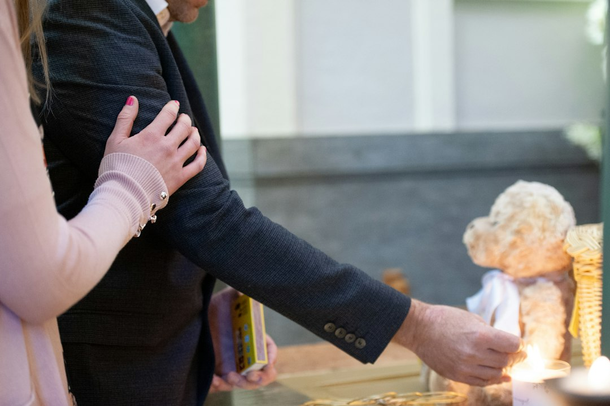

Automazione e Digitalizzazione nei Servizi Funerari: Il Divario Competitivo tra Metodi Manuali e Eternia di RM Studio

Il futuro digitale delle Onoranze Funebri e Servizi Memoriali: come colmare il gap competitivo tra metodi tradizionali e automazione
- L’utilizzo di metodologie manuali in onoranze funebri limita la qualità e raggiungibilità dei servizi commemorativi.
- Ricordini e necrologi cartacei presentano rischi di dispersione, costi elevati e limitata interazione emotiva.
- Eternia, SaaS innovativo, trasforma la gestione con portali digitali personalizzati, necrologi AI e strumenti interattivi dedicati.
Analisi approfondita della notizia e delle implicazioni operative
Nel panorama attuale delle onoranze funebri, case funerarie e servizi memoriali pet, la digitalizzazione sta emergendo come fattore chiave per la competitività e l’efficienza operativa. La notizia relativa alla crescente adozione di strumenti digitali evidenzia come le aziende che insistono su metodi tradizionali — in particolare utilizzando ricordini e necrologi cartacei — si trovino in grave svantaggio gestionale e comunicativo. Le limitazioni pratiche di questi strumenti sono molteplici: alto rischio di perdita fisica dei materiali, costi elevati e difficoltà nel raccogliere condoglianze in una modalità che rispetti la solennità del momento.
Questa situazione comporta un impatto diretto sulla percezione del servizio da parte delle famiglie coinvolte e sulla capacità delle agenzie di offrire un’assistenza commossa e completa. Le onoranze che continuano a operare esclusivamente con processi manuali rischiano di perdere terreno rispetto a concorrenti che sfruttano la tecnologia per innovare il customer journey funerario.
Le conseguenze e i costi di non agire
La persistenza di metodologie manuali genera molteplici svantaggi. Innanzitutto, i ricordini cartacei spesso si smarriscono o si danneggiano, frustrando il desiderio dei familiari di mantenere vive memorie tangibili. Parallelamente, la produzione e distribuzione di necrologi cartacei si dimostra non solo costosa ma anche limitata nelle modalità di diffusione e interazione.
Inoltre, la raccolta delle condoglianze rimane un aspetto ancorato a strumenti poco efficaci e non sempre appropriati, privando le famiglie di un’esperienza solenne e coinvolgente. Dal punto di vista operativo, questi fattori si traducono in inefficienze, perdita di clienti e di reputazione, oltre a costi ripetuti in stampe e materiali a basso valore aggiunto.
Le agenzie funerarie che non adottano innovazioni digitali rischiano dunque di essere percepite come obsolete, meno affidabili e poco attente alle esigenze evolute di una clientela sempre più digitale e interconnessa.
Come Eternia risolve il problema
Eternia di RM Studio si configura come la soluzione tecnologica naturale per chi opera nel settore funerario e desidera superare i limiti dei metodi tradizionali. Questo SaaS dedicato permette di costruire portali memoriali digitali d'autore, personalizzati con il brand dell’agenzia, accessibili via QR Code integrati su urne e ricordini. Grazie a una mappa GPS digitale, i visitatori possono individuare facilmente i luoghi di commemorazione dal vivo o virtuale.
Uno degli elementi distintivi di Eternia è il Libro dei Ricordi interattivo, che consente ai familiari e amici di lasciare messaggi e condoglianze in modo solenne, rispettoso e permanente. In aggiunta, la generazione di necrologi automatizzata tramite AI in 1-click riduce drasticamente i tempi e i costi, offrendo testi altamente professionali e personalizzati, sempre disponibili anche attraverso una reperibilità vocale AI H24 che supporta 24 ore su 24 i visitatori.
Con Eternia, l’intero processo commemorativo viene trasformato in un’esperienza digitale moderna, dignitosa e coinvolgente, capace di elevare la reputazione dell’agenzia e ampliare la propria offerta con strumenti innovativi e scalabili.
| Caratteristiche | Gestione Tradizionale | Con Eternia |
|---|---|---|
| Ricordini | Cartacei, a rischio smarrimento | Digitali con QR Code integrato, sicuri e duraturi |
| Necrologi | Stampati, limitati nella diffusione e costosi | Generati in 1-click da AI, sempre aggiornati e personalizzabili |
| Condoglianze | Raccolte manualmente, spesso disorganizzate | Libro dei Ricordi digitale interattivo, accessibile H24 con assistenza vocale AI |
| Accessibilità e Visibilità | Limitate a supporti fisici e orari ristretti | Portali digitali fruibili da ogni device, con mappa GPS e reperibilità 24/7 |
💡 Ti è stato utile questo approfondimento?
Condividilo con un collega o un amico del settore Titolari di Onoranze Funebri, Case Funerarie e Servizi Memoriali Pet a cui potrebbe interessare!
FAQ - Domande frequenti per professionisti delle Onoranze Funebri
1. Come garantisce Eternia la riservatezza delle informazioni sensibili sulle cerimonie?
Eternia utilizza solide misure di sicurezza informatica, con accesso autenticato ai portali memoriali e protezione criptata dei dati, garantendo privacy e riservatezza totale.
2. L’adozione di Eternia comporta un impatto complesso per il personale delle agenzie?
Il software è sviluppato per un utilizzo intuitivo e veloce, con supporto continuo da RM Studio per facilitare la formazione e l’integrazione nei processi aziendali.
3. È possibile personalizzare i portali memoriali con il brand e l’immagine dell’agenzia?
Sì, Eternia offre un servizio White-Label che consente di personalizzare completamente grafica, logo e contenuti per mantenere coerenza e identità del brand.
Inizia Subito
Agency Hub B2B a €690 per 10 Cerimonie White-Label personalizzate col brand dell'agenzia.
Fonti Ufficiali e Risorse Esterne
Scopri l'Intelligenza Artificiale per la tua attività
Ottimizza i processi e aumenta le vendite con le soluzioni B2B di RM Studio.
Scopri Eternia